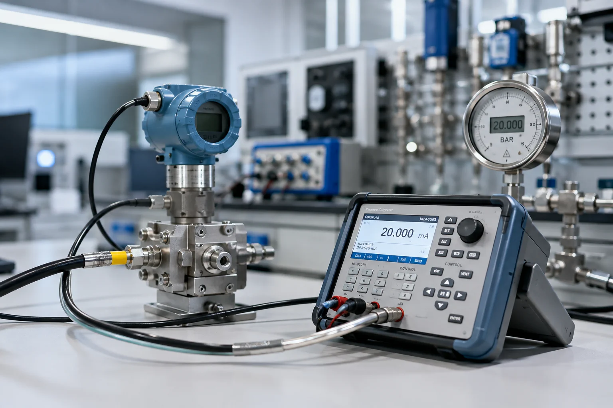
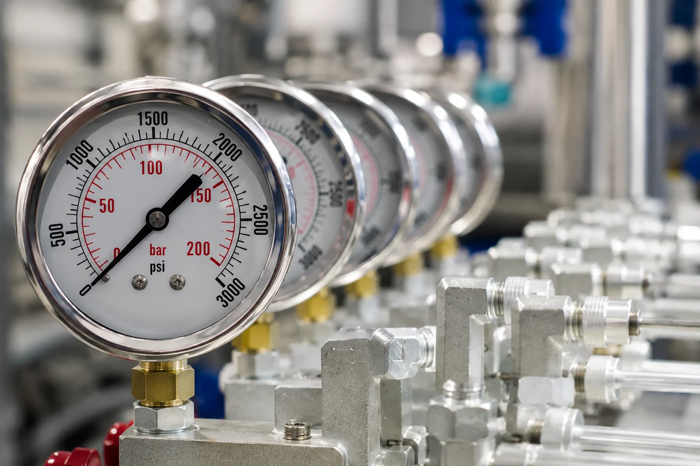

01
Calibração de pressão
Calibração de instrumentos de pressão com padrões rastreáveis à RBC.
Saiba maisInstrumentação · Calibração · Metrologia
Soluções em instrumentação, calibração, metrologia, manutenção e inspeção industrial para operações que exigem segurança, confiabilidade e controle.
Desde 2008 no mercado de instrumentação
01Engenharia de medição
A Instrumentech reúne serviços de calibração, manutenção, inspeção, metrologia e instrumentação para indústrias e laboratórios.

02Portfólio técnico
Oito frentes conectadas por um mesmo princípio: medir, verificar e intervir com critério técnico.
Calibração de instrumentos de pressão com padrões rastreáveis à RBC.
Saiba maisServiços para instrumentos de temperatura em aplicações industriais e laboratoriais.
Saiba maisCalibração e suporte para instrumentos analíticos e equipamentos utilizados em laboratório.
Saiba maisManutenção preventiva, corretiva e suporte técnico para equipamentos biomédicos e laboratoriais.
Saiba maisInspeções, testes e serviços relacionados a vasos de pressão, caldeiras e sua documentação técnica.
Saiba maisManutenção preventiva, corretiva, diagnóstico, ajustes e suporte técnico especializado.
Saiba mais03Contato técnico
Compartilhe os dados iniciais. A mensagem será organizada e enviada ao WhatsApp oficial.
04Inspeção e integridade
Inspeções, testes, manutenção, recuperação e documentação técnica para vasos de pressão e caldeiras.
05Grandezas essenciais
Pressão, temperatura e vazão organizadas como disciplinas técnicas próprias, com análise de instrumento, faixa e aplicação.
Manômetros, vacuômetros, transmissores, pressostatos e válvulas relacionadas.
Explorar pressãoTermômetros, sensores, transmissores, indicadores e controladores.
Explorar temperaturaMedidores e sistemas de medição, inclusive em campo.
Explorar vazão06Ambientes de precisão
pH-metros, condutivímetros, pipetas, balanças, vidrarias e analisadores.
Laboratório analíticoPreventiva, corretiva, diagnóstico e testes em equipamentos de análise clínica e laboratório.
Conhecer serviçoMarca, modelo, sintoma e aplicação iniciam a análise técnica.
Assistência técnica08Setores atendidos
A demanda muda por setor. O rigor da medição, da manutenção e da documentação permanece.
09Qualidade e rastreabilidade
Os padrões usados nos serviços da Instrumentech são calibrados por órgãos ou laboratórios credenciados à RBC. Cada serviço define, na proposta, qual documento acompanha a entrega.
RBCLiga a sua medição a referências reconhecidas por uma cadeia documentada.
ESCOPOMétodo, pontos, faixa e local de execução ficam definidos antes da execução, não depois.
DOCCertificados e procedimentos são disponibilizados conforme o escopo contratado.
10Processo de atendimento
Equipamento ou necessidade apresentados pelo cliente.
Requisitos, processo e escopo são identificados.
Serviço realizado em laboratório ou em campo.
Testes, conferências e documentação aplicável.
Equipamento e documentos disponibilizados ao cliente.
11Parceria técnica
A proposta de valor não está em promessas genéricas, mas em combinar experiência, suporte e critério de medição.

Experiência no mercado de instrumentação.
Atendimento especializado conforme a demanda.
Execução nas instalações do cliente.
Padrões rastreáveis à RBC.
Indústria, laboratórios e equipamentos biomédicos.
Preventiva, corretiva, diagnóstico e ajustes.
12Clientes e cases
Esta área está preparada para receber somente logotipos e cases autorizados pelo cliente. Nenhuma marca ou declaração foi simulada.
13Solicite uma análise
Fale com a equipe Instrumentech e encontre a solução técnica adequada para sua necessidade.